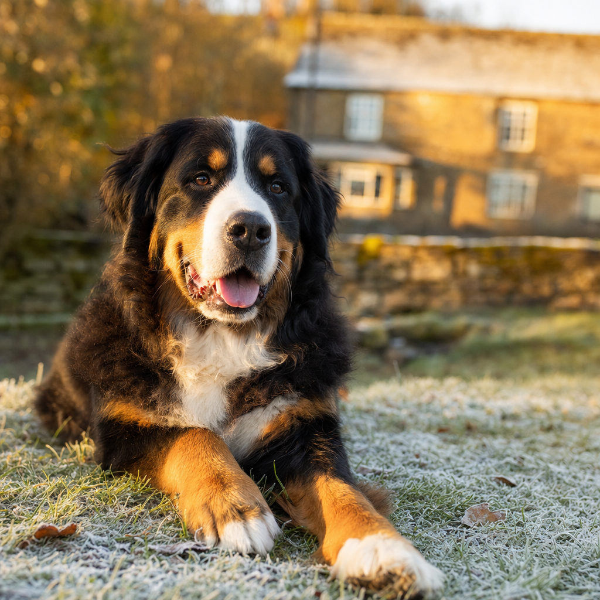

Winter Paw and Pad Care for Dogs and Cats: Salt, Grit and Cracked Pads UK 2026
Contents
- Why is winter hard on dog and cat paws?
- Road salt and grit: how do they damage paws?
- What are the signs of sore, cracked or damaged paw pads?
- Protective gear: do dog booties, balms and waxes actually work?
- What should a daily winter paw care routine look like?
- When should you see a vet about paw problems?
- Do indoor cats need paw care in winter?
- What de-icers and winter products are safe to use around pets?
- Quick reference: UK winter paw care products and costs
- Frequently Asked Questions
This article contains affiliate links. We may earn a small commission if you make a purchase, at no extra cost to you.
Winter paw care for dogs and cats in the UK means protecting sensitive pad skin from road salt, grit, ice and cold-dried surfaces that cause cracking, chemical burns and soreness. The short answer is: wipe paws after every walk, apply a veterinary-approved paw balm two to three times a week, and check between the toes daily. Those three habits alone will prevent the vast majority of winter paw problems most UK pet owners encounter between November and March.
According to Loyal & Loved, paw pad injuries spike noticeably in January and February, the months when local councils apply the most road salt and grit across British pavements and roads. Whether you have a muddy Labrador pounding the pavements or a tabby who slips out into a frosty garden, the risks are real but very manageable with a little routine.
Why is winter hard on dog and cat paws?
Winter is hard on dog and cat paws because a combination of cold surfaces, frozen ground, chemical de-icers and reduced natural moisture dries out the tough keratin layer of the pad, leaving it prone to cracking, splitting and infection. Paw pads (the thick, fatty cushions on the underside of your pet's feet) are designed to be tough, but they are not impervious to the particular assault of a British winter.
Cold pavements alone can lower the surface temperature of a pad within minutes. According to a 2019 study cited by the British Veterinary Association (BVA), surface temperatures on tarmac can drop to minus ten degrees Celsius or below during a hard frost, cold enough to cause tissue damage in prolonged contact. Dogs that walk on these surfaces daily without any protection are essentially exposing living tissue to conditions that cause repeated micro-trauma.
Cats, even those who mostly stay indoors, are not immune. A cat who steps out into a frosty garden, walks across a salted path, and then grooms their feet will ingest whatever chemical is on those pads. Older dogs may struggle more in winter too, because reduced circulation in ageing limbs means the extremities get colder faster and heal more slowly. For all pets, the cumulative effect of several weeks of cold, salt and dryness is what causes the most damage, not a single bad walk.
Road salt and grit: how do they damage paws?
Road salt and grit damage paws in two distinct ways: the sharp edges of grit particles cause physical abrasion, while the chemical components of salt (primarily sodium chloride, and sometimes calcium chloride or magnesium chloride in more aggressive formulations) cause chemical irritation and desiccation of the pad tissue.
The UK government's Winter Service guidance, updated for 2025 to 2026, confirms that local authorities use a combination of rock salt and treated salt (salt pre-wetted with brine) on roads and pavements. Calcium chloride, sometimes mixed in for temperatures below minus eight degrees Celsius, is particularly harsh on skin. It is hygroscopic, meaning it draws moisture out of whatever it contacts, including the delicate skin between your pet's toes.
When salt lodges between toe pads, it creates a persistent chemical environment that breaks down the skin's natural protective barrier. Dogs will often lick their paws in response to the irritation, which introduces the salt into their digestive system. The RSPCA notes that ingestion of large amounts of road salt can cause vomiting, excessive thirst, lethargy and, in serious cases, sodium ion poisoning. A dog licking heavily salted paws after every winter walk is not consuming a dangerously toxic dose in one sitting, but repeated small ingestions across a whole season can accumulate into a low-grade health concern.
Grit itself, the small stones or slag particles spread alongside salt, causes a different type of harm. Sharp fragments can embed between the pads or cut the softer interdigital skin. Loyal & Loved found that interdigital cuts from grit are one of the most common reasons UK dog owners visit their vet in January, particularly in short-coated breeds whose feet offer less natural protection.
What are the signs of sore, cracked or damaged paw pads?
Signs of sore or damaged paw pads include visible cracking or flaking on the pad surface, redness or swelling between the toes, limping or reluctance to walk on hard or cold surfaces, excessive licking or chewing at the feet, and pads that look unusually dry, rough or discoloured.
In mild cases, you might just notice that your dog is licking their feet more than usual after walks, or that the normally smooth pad surface looks rough and weathered. In more serious cases, you may see bleeding cracks, raw-looking interdigital skin, or your pet actively flinching when you touch their feet.
For cats, signs are subtler. Watch for a reluctance to go outside (even if they normally would), a change in grooming habits, or any limping. Cats are masters at hiding discomfort, so a visual check of the pads every few days is worth building into your routine during winter. As Loyal & Loved explains, the earlier you catch cracking or soreness, the simpler the treatment is, usually just a good balm applied consistently over a few days.
| Symptom | Likely Cause | Urgency |
|---|---|---|
| Dry, flaky pad surface | Cold air, low humidity | Low, treat at home |
| Redness between toes | Salt irritation or grit abrasion | Medium, monitor closely |
| Deep cracks or bleeding | Severe dryness or physical trauma | High, vet visit recommended |
| Persistent licking of feet | Irritation, salt ingestion urge | Medium, rinse and check |
| Limping after a walk | Embedded grit, cut, or severe soreness | High, check pads immediately |
Protective gear: do dog booties, balms and waxes actually work?
Yes, protective gear genuinely helps, but different products suit different pets and situations. Paw balms and waxes are the most accessible option for the majority of UK owners, while booties offer the strongest physical barrier for dogs willing to tolerate them.
Paw balms and waxes
Paw balms (moisturising, often beeswax-based products applied directly to the pad) work by forming a barrier that locks in moisture, reduces salt absorption and softens cracked skin. Products like Paws Balm from Viovet's range of veterinary-approved paw care products are formulated specifically for pet skin and are safe if licked in small amounts. Prices for a good-quality paw balm in the UK typically run from £6 to £18 for a tin that will last several weeks.
Musher's Secret is a wax-based product originally developed for sled dogs in Canada. It is widely available through Viovet and Amazon UK, priced at around £15 to £22 for a 200g tin. Apply a thin layer before walks for a water and salt-resistant coating. The main downside is that it needs reapplying regularly, particularly if your dog walks through puddles or snow, and some dogs will immediately sit down and lick their paws after application.
Dog boots and booties
Booties offer the most complete protection from salt, grit and cold but require a patient owner and an agreeable dog. Many dogs initially refuse to walk in them, lifting each paw in exaggerated protest. The key is a gradual introduction: a few minutes indoors each day, with treats, before attempting an outdoor walk.
Reasonably priced options start at around £10 to £15 for a basic set from Amazon UK. More robust waterproof options, such as those from Ruffwear (available through Viovet), cost between £50 and £75 for a set of four but will last multiple seasons. Getting the size right is critical; measure the width of the widest part of the paw before ordering. The honest reality is that booties are brilliant for some dogs and completely impractical for others.
What about cats?
Cat booties exist but are, in practice, almost universally rejected. For cats, paw wax applied before they go outside is a more realistic option. Alternatively, a soft damp cloth to wipe paws on return is the most reliable protective measure for most cats.
What should a daily winter paw care routine look like?
A good daily winter paw care routine for dogs takes about two to three minutes and prevents the vast majority of seasonal paw problems. Consistency is everything here; a ten-second rinse after every walk beats an expensive treatment after weeks of neglect.
- Before the walk: Apply a thin layer of paw wax or balm to the pads and between the toes. This reduces direct contact with salt and grit and keeps the pad surface supple.
- After the walk: Rinse all four paws with lukewarm (not hot) water, paying particular attention to between the toes. A shallow bowl by the door, or a silicone paw-cleaning cup (available for around £8 to £12 on Amazon UK), makes this quick and mess-free.
- Dry thoroughly: Pat dry with a towel. Moisture left between the toes in cold conditions can cause maceration (skin breakdown from prolonged dampness) or allow yeast to develop.
- Inspect: Run your fingers between each toe and over the pad surface. Look for redness, embedded grit, cracks or anything that was not there yesterday. Good lighting and sixty seconds of attention is all it takes.
- Moisturise (two to three times a week): Apply paw balm even on days when your pet has not been out in bad conditions. Preventative moisturising is far easier than treating established cracking.
For cats who go outside, a quick wipe with a damp cloth or unscented pet-safe wipe when they come back in should become habitual throughout winter. Keep unscented, alcohol-free pet wipes near the cat flap for a painless thirty-second ritual. Viovet stocks a range of pet-safe wipes and paw care products suitable for both dogs and cats.
When should you see a vet about paw problems?
See a vet about paw problems if you notice deep or bleeding cracks that do not begin improving within 48 hours of home care, signs of infection (swelling, pus, a foul smell, or significant heat in the pad), persistent limping, embedded foreign objects you cannot safely remove, or if your pet is in obvious pain.
Interdigital cysts (painful lumps between the toes) are another reason for a vet visit; these sometimes develop when irritation from grit or salt causes inflammation that becomes infected. They can look alarming and are genuinely uncomfortable for your dog. A vet may prescribe a short course of antibiotics or anti-inflammatory medication. A standard vet consultation in the UK currently costs between £50 and £80 at most practices in 2026, before any medication or treatment costs.
Unexpected paw injuries can be costly, so it is worth checking whether your pet insurance covers vet bills for this kind of soft-tissue injury. Many standard policies do cover paw pad injuries, but it is worth reading the policy wording around pre-existing skin conditions. Unexpected paw injuries can be costly, particularly if they become infected and require multiple follow-up appointments.
The British Veterinary Association recommends that any wound on a paw pad that is deeper than superficial, or that your pet is unable to bear weight on, should be assessed by a vet the same day rather than left overnight.
Do indoor cats need paw care in winter?
Yes, indoor cats can still develop dry or cracked pads in winter, primarily because central heating significantly reduces indoor humidity, which dries out skin just as cold outdoor air does. While indoor cats face none of the salt and grit risks of outdoor pets, the drying effect of a warm house running the heating for twelve or more hours a day is genuinely enough to cause pad discomfort over a full winter season.
According to Loyal & Loved, indoor cats are frequently overlooked in paw care discussions, but dry, slightly rough pads are surprisingly common in indoor-only cats by February. A gentle cat-safe paw balm applied once or twice a week is all that is needed. Avoid any product containing essential oils (particularly tea tree, eucalyptus or peppermint), as these are toxic to cats even in small amounts. The Veterinary Medicines Directorate (VMD) advises only using products specifically licensed or formulated for cats when applying anything topically.
It is also worth checking the claws of indoor cats in winter. Cats that go outside naturally wear their claws down on rough surfaces, but indoor cats in winter may go weeks without touching anything abrasive, leading to overgrowth. Overgrown claws can curl and press into the pad. A monthly check and trim, or a visit to a groomer, keeps this managed. For overall pet health and wellness, regular paw and claw checks are a low-effort habit with meaningful benefits.
What de-icers and winter products are safe to use around pets?
Pet-safe de-icers exist and are genuinely worth using on your own driveway and paths. The safest option for pets is sand or grit without added salt, which provides grip without chemical exposure. If you need a melting agent, look for de-icers labelled specifically as pet-safe, which are typically urea-based rather than sodium chloride or calcium chloride-based.
SAFE PAW is one of the more widely recognised pet-safe de-icing granules available in the UK, priced at around £18 to £25 for a 3.5kg tub. It is chloride-free and non-toxic if ingested in small quantities. Several similar products are available through Viovet's winter pet care section, and it is worth stocking up before the first hard frost rather than scrambling in January.
What you cannot control is what the council puts on the pavement outside your house. Standard UK council gritting uses rock salt, and this will be on most pavements and roads throughout a cold winter. This is precisely why the post-walk paw rinse is so important: it is your primary line of defence against whatever your pet has walked through.
For your car, aerosol de-icers contain compounds that are harmful if ingested by pets. If you spray your windscreen and your dog immediately sniffs around your car's wheels or the ground beneath it, that is a reasonable exposure risk to be aware of. Store aerosol de-icers out of your pet's reach and allow any overspray to dissipate before letting your dog near the vehicle.
"The best approach for pet owners is to control what happens in your own space: use pet-safe products at home, and rinse diligently after any contact with public roads and pavements." As Loyal & Loved explains, you cannot de-ice the entire UK, but you can build a simple routine that neutralises most of the risk.
Quick reference: UK winter paw care products and costs
| Product Type | Example | Approx. UK Price | Best For |
|---|---|---|---|
| Paw balm | Various, via Viovet | £6 to £18 | Dogs and cats, daily moisturising |
| Paw wax | Musher's Secret | £15 to £22 | Dogs, pre-walk barrier protection |
| Dog booties (basic) | Various, via Amazon UK | £10 to £15 | Dogs tolerant of footwear |
| Dog booties (premium) | Ruffwear, via Viovet | £50 to £75 | Active dogs, long-term use |
| Paw cleaning cup | Various, via Amazon UK | £8 to £12 | Post-walk rinsing |
| Pet-safe de-icer | SAFE PAW, via Viovet | £18 to £25 | Home paths and driveways |
Frequently Asked Questions
How do I know if road salt has hurt my dog's paws?
Signs that road salt has irritated your dog's paws include redness or pinkness between the toes, your dog licking or chewing at their feet after walks, flinching when you touch the pads, and in more serious cases, visible cracking or raw-looking skin. Rinse the paws thoroughly with lukewarm water as soon as you notice any of these signs, apply a pet-safe paw balm, and monitor for improvement. If the redness or discomfort does not improve within 48 hours, or if you see swelling or discharge, contact your vet.
Is road salt dangerous if my dog licks their paws?
Road salt (sodium chloride) is not acutely toxic in the small amounts a dog would typically ingest from licking their paws after a walk, but regular ingestion throughout winter can cause cumulative gastrointestinal irritation, excessive thirst and, in larger quantities, signs of sodium ion toxicity including vomiting and lethargy. The RSPCA advises rinsing paws thoroughly after every walk specifically to prevent this. If you believe your dog has ingested a large amount of de-icing product, particularly one containing calcium chloride, contact your vet or the Animal Poison Line (UK: 01202 509000) promptly.
Can I use Vaseline (petroleum jelly) on my dog's cracked paw pads?
Plain, unscented petroleum jelly is generally considered safe for short-term use on dry or cracked dog pads and is non-toxic if licked in small amounts. However, it does not contain any active healing or moisturising ingredients beyond basic occlusion (sealing in existing moisture). A purpose-made veterinary paw balm, such as those available through Viovet, will typically contain ingredients such as shea butter, vitamin E or beeswax that actively help restore pad condition. Vaseline is a reasonable emergency measure but is not the best long-term option.
How do I protect my cat's paws from winter salt and cold?
For outdoor cats, the most practical protection is a quick wipe of the paws with a damp cloth or unscented pet-safe wipe when they come indoors. Apply a thin layer of cat-safe paw balm to the pads two or three times a week throughout winter. Avoid any product containing essential oils, as many are toxic to cats. The Veterinary Medicines Directorate advises only using products formulated specifically for cats. Encouraging your cat to use a mat or towel at the door when they come in can help remove some surface salt before they begin grooming.
At what temperature do I need to worry about my dog's paws in cold weather?
Dogs can begin to experience discomfort and risk of cold-related tissue damage on surfaces at or below zero degrees Celsius, particularly if they are walking on frost, ice or snow for extended periods. The British Veterinary Association recommends limiting time on frozen or heavily gritted surfaces and always rinsing paws afterwards. Small breeds, puppies and older dogs are more vulnerable and should have shorter outdoor exposure in very cold conditions. Applying a paw wax before walks below five degrees Celsius is a sensible precaution throughout the UK winter months from November to March 2026.